Por que estes dias, horários e formatos
Base: as estatísticas do Instagram de @brunochapadeiro (Meta, últimos 90 dias). Se o perfil for seu, veja os seus números em Insights › Público.
- Quem segue @brunochapadeiro fica mais ativo das 18h às 21h, com pico às 18h. Melhores dias, segundo a Meta: terça, quinta, sexta e domingo.
- Em 90 dias, os stories tiveram 112 mil visualizações; os posts, 94 mil, a maior parte de quem não segue; os Reels, só 1 mil. Por isso: stories todos os dias, um carrossel por dia no feed e Reels só como extra (o vídeo rende mais no status do WhatsApp).
- Os posts que mais renderam foram carrosséis de texto sobre fundo escuro, assinados (o maior passou de 73 mil visualizações), e o infográfico do fim da 6x1.
- Público: 3 em cada 4 são mulheres, a maioria de 35 a 54 anos, e 98% estão no Brasil. Cuidado, trabalho, saúde e bolso falam com esse público.
- Foram só 41 toques no link da bio em 90 dias, para 3,8 mil visitas ao perfil: o link precisa ir no adesivo do story e no texto do WhatsApp.
O que mais vira voto e leva a votar
- Conversa pessoal vence mensagem em massa: o contato direto, de quem a pessoa conhece, é o que mais aumenta o comparecimento (Green e Gerber, Get Out the Vote).
- Plano concreto: quem diz a hora, o caminho e com quem vai vota mais (Nickerson e Rogers, 2010). Feche cada conversa com o Plano de domingo.
- Norma social: dizer que “todo mundo aqui vai votar” mobiliza mais do que lamentar a abstenção (Gerber e Rogers, 2009).
- Conversa sem julgamento muda opinião de forma duradoura (Kalla e Broockman, 2020): pergunte primeiro e use um fato por vez, ligado à vida da pessoa.
- Tire o obstáculo: no 1º turno, viagem, saúde, trabalho e documento pesaram mais que o desinteresse (Datafolha). Pergunte o que atrapalhou e resolva junto.
- Lembrete de pessoa para pessoa na véspera e no dia, com hora marcada, transforma intenção em voto: é a Corrente dos 3.
Pesquisas até 24/10/2026, 22h50 (última atualização antes da votação)
- Média simples das 18 pesquisas mais recentes registradas no TSE, uma por instituto (conta nossa, não é previsão): Lula 49,0% × Flávio 51,0% nos válidos. Em 16 delas, a diferença cabe na margem de erro: empate técnico.
- As mais recentes: Datafolha (23 e 24/10): Lula 49,0 × Flávio 51,0; Futura (23 e 24/10): Lula 49,9 × Flávio 50,1; Gerp (21 a 24/10): Lula 48,0 × Flávio 52,0; Nexus (23 e 24/10): Lula 49,5 × Flávio 50,5; Palver (22 a 24/10): Lula 49,5 × Flávio 50,5; Quaest (23 e 24/10): Lula 49,0 × Flávio 51,0. Registro, amostra e margem de cada uma: https://jogaviravoto.brunochapadeiro.workers.dev/pesquisas.
- É o mesmo placar do 1º turno entre os dois (Lula 49,0%). Quem decide é quem for votar: 33,4 milhões não votaram no dia 4. Virar 1,2 milhão de votos empata.
- Registradas para sábado e sem resultado localizado até a última atualização: Colectta, Simplex, Phoenix. A página de pesquisas não muda mais: domingo é dia de votação.
- Como postar pesquisa: texto digitado por você, o print da notícia ou o link da página, sempre com instituto, campo, amostra, margem e registro. Nunca arte nova com número de pesquisa feita com IA, e nunca pesquisa sem registro no TSE. A média é conta: diga isso.
Checagens
- Debate da Globo (23/10): na média de Lupa, Estadão Verifica e Aos Fatos, 26% das frases de Flávio checadas eram verdadeiras; de Lula, 52%. Somando as 86 checagens das 4 agências (com g1), Flávio teve 12 falsas e Lula, 3. Placar de cada agência e lista das frases: https://jogaviravoto.brunochapadeiro.workers.dev/checagem.
- Debate da Band (18/10): Agência Lupa (40 frases), Aos Fatos (49) e Estadão Verifica (28). Quase metade das frases de Flávio não se sustenta; Lula também errou em algumas.
- Aos Fatos: ao menos 43 declarações falsas ou enganosas de Flávio sobre a relação com Vorcaro, do Banco Master (24/9); na entrevista dele à TV Globo (16/10), erro na maioria das 15 frases checadas.
- Sigilos: Lula aceitou as 19 condições de Flávio e entregou as autorizações ao TSE (22/10); a campanha de Flávio disse que só entrega depois de analisar os documentos de Lula, sem prazo (O Povo, 23/10). Mendonça (TSE): cada um pode abrir por conta própria (CNN, 22/10).
- Cuidado com montagem e dossiê anônimo: a Justiça já mandou apagar imagem falsa, feita com IA, que ligava Flávio ao caso Master. Use só o que tem veículo, data e link.
Diretrizes do Janones (Exército do Lula), com filtro
- Orientação de 21/10: curtir, comentar e compartilhar os posts do Lula e da campanha; não interagir com posts do Flávio, nem para criticar, porque engajamento dá alcance.
- O canal “Exército do Lula” no WhatsApp passou de 7 milhões de seguidores (21/10). Live de 24 horas a partir do fim do debate da Globo (por volta das 23h de sexta) até as 23h de sábado, com missões ao longo do dia (TVT News, 21/10).
- Hashtags puxadas pelo canal: #AbreOSigiloFlavio (desde o debate da Band) e #NordestinosComLula (20/10). Missão dos símbolos nacionais (17/10): camisa da seleção, verde e amarelo, fazer o L.
- O que este plano deixa de fora: inflar buscas com acusações sem prova e repassar dossiê anônimo. Não vira voto de indeciso e pode virar processo.
Ações presenciais até domingo
- Todo dia, das 17h às 20h (e na sexta também das 6h às 9h): terminal, ponto de ônibus ou saída de trabalho. Abra com “Você conseguiu votar no 1º turno?”, resolva o obstáculo e feche com o cartão do Plano de domingo.
- Antes de sair, abra o Ganha Voto Rua, da campanha: escolha uma seção onde Lula perdeu por pouco e registre cada voto virado (ganhavotoprolula.com.br/rua).
- Foco: quem pode faltar (não votou no 1º turno, trabalha no domingo, cuida de alguém) e os 6% que ainda admitem mudar o voto (PoderData). Com quem já decidiu pelo outro lado, agradeça e siga.
- Comece por quem você conhece: prédio, rua, trabalho, igreja, escola dos filhos. Conversa com quem a pessoa conhece rende mais do que panfleto.
- Corrente dos 3: cada pessoa que passar pela banquinha leva três para votar, com hora marcada.
- Sábado: feiras de manhã. Material impresso, caminhada e carreata podem até as 22h (Lei 9.504/1997, art. 39, § 9º).
- Domingo: vote cedo, leve a família e use só manifestação silenciosa e individual. Sem boca de urna e sem carona para quem não é da família.
- Segurança: sempre em dupla e de dia. Lugar hostil, não insista; provocação, agradeça e siga.
Vídeos para gravar (roteiros com teleprompter: https://jogaviravoto.brunochapadeiro.workers.dev/roteiros)
- Quando quiser, até sábado: Você conseguiu votar no 1º turno? (Stories (3 de 15 s) e status do WhatsApp, 45 s)
- Quando quiser, até sábado: O que eu aprendi na banquinha (Reels e feed (vídeo vertical), 60 s)
- Sábado, 8h: Corrente dos 3 (Stories e status do WhatsApp, 30 s)
- Quando quiser, até sábado: “Não vou votar porque…”: o que eu respondo (Reels, 45 s)
- Sexta, 19h: Quem cuida de quem cuida? (Feed e Reels, 60 s)
- Quando quiser, até sábado: Material de graça para você usar (Stories (3 de 15 s), com gravação da tela do site, 45 s)
- Quando quiser, até sábado: Para quem lidera equipes (LinkedIn (vídeo) e WhatsApp do trabalho, 45 s)
- Sábado, de manhã: Antes de repassar, confira (Stories, 20 s)
- Sábado, 19h: Checklist de amanhã (Stories, Reels e status do WhatsApp, 30 s)
A semana num quadro
Toque no dia para ver as peças, os textos e o texto alternativo.
| Dia | |||
|---|---|---|---|
| Sexta, 23/10, a partir das 13hDebate na Globo às 21h20 e live de 24 horas do Exército do Lula (melhor dia) | Stories 13h; Stories e status do WhatsApp (vídeo) 14h; Stories e status do WhatsApp (vídeo) 16h; Reels e feed (vídeo) 18h; Feed e Reels (vídeo) 19h; Stories 20h30 | Grupos 17h; Grupo da militância 23h30 | — |
| Sábado, 24/10Último dia de post novo e de rua (até 22h); live do Exército do Lula até as 23h | Stories (cards 1 a 7) 9h; Stories (só texto) 10h; Reels, Stories e status (vídeo) 10h15; Stories e status do WhatsApp (vídeo) 10h30; Reels e feed (vídeo) 11h; Stories e status do WhatsApp (vídeo) 11h30; Feed (carrossel de 10) 12h; Stories (cards 8 a 13) 12h30; Stories e status do WhatsApp (vídeo) 13h; Stories e status do WhatsApp (vídeo) 14h; Stories (vídeo) 15h; Reels e feed (vídeo) 16h; Stories e status do WhatsApp (vídeo) 17h; Stories 18h às 21h; Stories, Reels e status (vídeo) 19h; Feed 20h | Grupos e família 9h30; Grupos 13h30; Família e trabalho 19h; Corrente dos 3 21h | Vídeo 9h30 |
| Domingo, 25/10Dia de votar: nada novo de campanha; utilidade pública, lembrete pessoal e, depois das 17h, a apuração oficial | Stories (só se quiser, utilidade pública) 7h30; Stories (link, só texto) 19h (votação prorrogada); Stories (card parcial) da noite até o fim; Stories e feed (resultado) quando o TSE totalizar | Família e grupos (utilidade pública) 7h30; Corrente dos 3 10h e 14h; Família e grupos 19h30 | — |
Antes de postar
- Poste do seu perfil pessoal. Não pague para impulsionar: só partido, federação e candidatura podem.
- Sem disparo em massa e sem robô: mande para os seus contatos e para os grupos de que você participa.
- Regra das 72 horas (mudança de março de 2026 na Res. TSE 23.610/2019): das 72 horas antes da votação até 24 horas depois, fica restrita a circulação de conteúdo novo produzido ou alterado por IA, mesmo com aviso (CNN Brasil); o Migalhas descreve a regra como voltada a conteúdo que altere a voz de candidato. Por precaução, neste plano: nenhuma arte, vídeo ou áudio gerado por IA a partir de quinta, 8h, e nenhuma foto de candidato. Os vídeos de tela e os cards da checagem são gravações e prints de páginas do site, sem foto, voz ou imagem gerada; quem quiser o caminho mais seguro usa só texto digitado e prints das agências. O que já está no ar pode ficar. Isto não é parecer jurídico: na dúvida, consulte o jurídico da campanha.
- As artes, os vídeos e o áudio deste kit foram feitos com auxílio de IA: mantenha o aviso na legenda e poste até quarta, 21.
- Figurinhas do Instagram (Quiz, Enquete, Caixa de perguntas, Contagem regressiva) dão mais interação nos stories: estão indicadas em cada dia.
- Ponha o texto alternativo em cada imagem (ele está aqui, com botão de copiar). Instagram: Configurações avançadas, Escrever texto alternativo. LinkedIn: Texto alternativo, ao adicionar a imagem.
- Hashtags com a primeira letra de cada palavra maiúscula (#ViraVoto): o leitor de tela lê certo.
- Se você é servidor público: poste como cidadão, fora do expediente, sem nome, logo, e-mail ou canais da instituição (Lei 9.504/1997, art. 73).
- Prints de mensagens: as fotos de perfil foram cortadas. Não publique print que exponha ou ataque alguém; para responder a um ataque, use a versão sem print.
- Domingo, 25: nada novo nas redes. O que já está no ar pode ficar.
Sexta, 23/10, a partir das 13h
Debate na Globo às 21h20 e live de 24 horas do Exército do Lula (melhor dia)
A Cartilha nos Reels e nos stories. Hoje, não repita a Cartilha: o foco é mostrar o que o site faz e preparar o debate. O que estava no plano para a manhã e não saiu pode ir agora, no lugar do item da mesma hora.
Pesquisas da véspera do debate: print da notícia do Datafolha (50% a 50% nos válidos; era 51% a 49% para Flávio) e do Vox Radar (Lula 50,6%, Flávio 49,4%), com veículo e data, e uma frase sua: “Empatou. Quem decide é quem for votar.”
Vídeo de tela do site, sem rosto, sem voz e sem imagem de candidato (pode ir ao ar até sábado). Não tem som: tudo está escrito na tela; se quiser, ponha uma música da biblioteca do Instagram, baixinha. Adesivo de link: https://jogaviravoto.brunochapadeiro.workers.dev/ (texto: Games Vira-Voto).
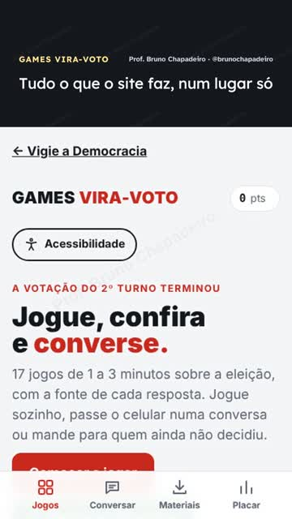
Baixar Vídeo 9:16 tela-tour.mp4
Texto para copiar
Tudo o que o site Vira-Voto faz, de graça: 17 jogos de 1 a 3 minutos, como conversar sem brigar, materiais para baixar, missões do dia, placar do Brasil e acessibilidade (letra grande, contraste, áudio e Libras). Use até domingo e mande para quem vai conversar com você. Link nos stories. Gravação da tela do site. #ViraVoto #SegundoTurno #Eleições2026 #GamesViraVoto
Texto alternativo das imagens
- Vídeo sem som, 34 segundos, gravação da tela do celular mostrando tudo o que o site faz: as quatro abas (Jogos, Conversar, Materiais e Placar), as missões do dia e os botões de acessibilidade. Legendas na tela: Tudo o que o site faz, num lugar só; Embaixo, quatro abas; Conversar: como virar voto, passo a passo; Materiais: PDF, áudio e vídeo para baixar; Placar do Brasil, como no Instagram; 17 jogos, de 1 a 3 minutos; Missões do dia, até domingo; Acessibilidade: letra, contraste, Libras; Tudo de graça. Link nos stories.
Vídeo de tela do site, sem rosto, sem voz e sem imagem de candidato (pode ir ao ar até sábado). Não tem som: tudo está escrito na tela; se quiser, ponha uma música da biblioteca do Instagram, baixinha. Depois, adesivo de link: https://jogaviravoto.brunochapadeiro.workers.dev/plano (texto: Meu plano de domingo) e enquete “Já sabe a que horas vai votar?” Sim / Ainda não.
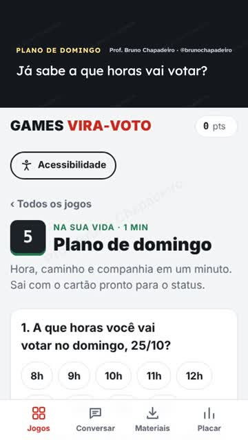
Baixar Vídeo 9:16 tela-plano.mp4
Texto para copiar
Já sabe a que horas vai votar no domingo? Em 1 minuto: hora, caminho, companhia e documento. Sai com o cartão pronto para o status e o lembrete na agenda. Quem tem plano vota mais. Faça o seu e mande para quem vai com você: link nos stories. Gravação da tela do site. #ViraVoto #SegundoTurno #Eleições2026 #PlanoDeDomingo
Texto alternativo das imagens
- Vídeo sem som, 27 segundos, gravação da tela do celular mostrando o jogo Plano de domingo: hora, como vai, com quem, onde vota e documento; no fim, o cartão para o status. Legendas na tela: Já sabe a que horas vai votar?; 1. A hora: das 8h às 17h; 2. Como você vai; 3. Com quem; 4. Onde vota: o e-Título mostra; 5. Documento com foto, mesmo vencido; Pronto: cartão para o status; Mande para quem vai com você.
Só texto e link. Mande também no grupo da família.
Texto para copiar
Hoje, 21h20, tem debate na Globo (também na GloboNews e no g1). Vou acompanhar com o Debate na mão: os temas, os fatos com fonte e o que conferir antes de repassar um corte. https://jogaviravoto.brunochapadeiro.workers.dev/debate Depois do debate, a live de 24 horas do Exército do Lula começa por volta das 23h.
Terminais e saída do trabalho (Guia da banquinha). Pergunta, obstáculo resolvido, cartão do plano e registro no Ganha Voto. Avise: “hoje tem debate, às 21h20”.
Vídeo de tela do site, sem rosto, sem voz e sem imagem de candidato (pode ir ao ar até sábado). Não tem som: tudo está escrito na tela; se quiser, ponha uma música da biblioteca do Instagram, baixinha. É o post do dia: mostra a página que vai ajudar a acompanhar o debate.
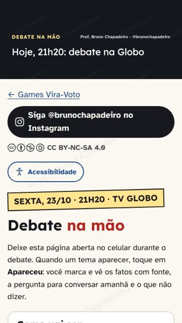
Baixar Vídeo 9:16 tela-debate.mp4
Texto para copiar
Hoje tem debate na Globo, às 21h20. Deixe o Debate na mão aberto no celular: quando um tema aparecer, toque e veja os fatos com fonte, a pergunta para conversar amanhã e o que não dizer. Tem também o que conferir antes de repassar um corte. Link nos stories. Gravação da tela do site. #ViraVoto #SegundoTurno #Eleições2026 #DebateNaGlobo
Texto alternativo das imagens
- Vídeo sem som, 33 segundos, gravação da tela do celular mostrando a página Debate na mão: como vai ser o debate da Globo, os temas que se marcam com um toque, os fatos com fonte e o que fazer depois. Legendas na tela: Hoje, 21h20: debate na Globo; Deixe esta página aberta no celular; Apareceu um tema? Toque e marque; Os fatos, com fonte, na hora; E a pergunta para conversar amanhã; O contador mostra o que já apareceu; Truques de debate: aprenda a ver; Depois: checagem, vídeo inteiro e a live; Link nos stories. Abra antes das 21h20.
Se você gravou Quem cuida de quem cuida? (teleprompter: https://jogaviravoto.brunochapadeiro.workers.dev/roteiros#r5), é a hora dele. Se não gravou, pule: o vídeo do debate das 18h já cumpre o papel.
Texto para copiar
Quem cuida de quem cuida? · Feed e Reels · 60 s · Sexta, 19h Cena: Sentado, fundo neutro (sua estante, por exemplo). Fale devagar. Sou psicólogo e pesquiso saúde mental e trabalho. Os afastamentos por transtorno mental quase dobraram no Brasil de 2023 a 2025. [PAUSA] Quem cuida de quem cuida? A mãe na escala seis por um. A filha que cuida do pai idoso. A professora, a enfermeira, o motorista. O fim da escala seis por um foi promulgado. A nova NR-1 obriga as empresas a prevenir riscos psicossociais. Mas lei no papel não basta: precisa de quem regulamente e fiscalize. Domingo, eu voto pensando em quem cuida. [OPCIONAL: Eu voto Lula.] Os dados, com as fontes, estão na Apostila Vira-Voto. Link na bio. Texto na tela: Afastamentos por transtorno mental: quase o dobro / Fim da 6x1: promulgado / NR-1: prevenir riscos psicossociais Adesivo de link: https://jogaviravoto.brunochapadeiro.workers.dev/apostila#saude-mental Legenda: Quem cuida de quem cuida? Os dados, com as fontes, estão na Apostila Vira-Voto (link na bio). Teleprompter: https://jogaviravoto.brunochapadeiro.workers.dev/roteiros#r5
Texto seu: “Daqui a pouco, debate. Vou acompanhar com o Debate na mão.” Adesivo de link: https://jogaviravoto.brunochapadeiro.workers.dev/debate (texto: Debate na mão) e enquete “Vai assistir?” Sim / Vou ver os cortes.
Deixe o Debate na mão aberto e marque cada tema que aparecer. Comente com texto seu; curta, comente e compartilhe os cortes oficiais da campanha. Não interaja com posts do Flávio, nem para criticar. Nada de montagem.
Entre na live de 24 horas e cumpra uma missão. Se postar um story da live, use print da tela real, sem edição.
Antes de repassar qualquer corte, veja o trecho inteiro. Só texto e link.
Texto para copiar
Sobre o debate de hoje: 1. Antes de repassar um corte, veja o trecho inteiro no Globoplay ou no g1. 2. Checagem: Agência Lupa, Aos Fatos e Estadão Verifica. 3. Os temas, com fonte, e o que conversar amanhã: https://jogaviravoto.brunochapadeiro.workers.dev/debate 4. Casos com fonte, um por vez: https://jogaviravoto.brunochapadeiro.workers.dev/roleta Domingo, das 8h às 17h. Documento com foto, mesmo vencido.
Sábado, 24/10
Último dia de post novo e de rua (até 22h); live do Exército do Lula até as 23h
Cards novos da página Checagem do debate: capa, média das agências, placar por agência, onde as agências concordam, chocolate, Tigrinho e R$ 400 bilhões. Se já postou os cards de ontem cedo, poste só os cards 2, 3 e 4, que são os novos. São prints de uma página do site, sem foto, voz ou imagem gerada; a notícia da CNN sobre a regra das 72 horas diz que ela restringe qualquer conteúdo novo produzido ou alterado por IA. Se quiser o caminho mais seguro, use a versão só texto abaixo ou os prints das próprias agências. Adesivo de link no último card: https://jogaviravoto.brunochapadeiro.workers.dev/checagem (texto: Placar de cada agência).
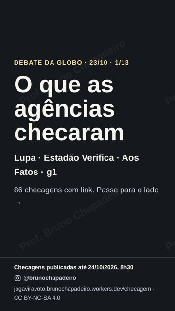
Baixar Story 9:16 checagem-story-01.png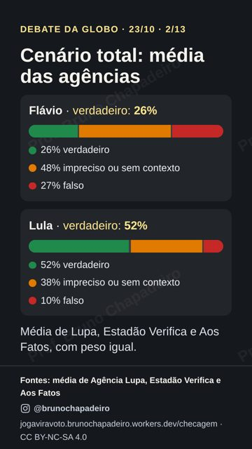
Baixar Story 9:16 checagem-story-02.png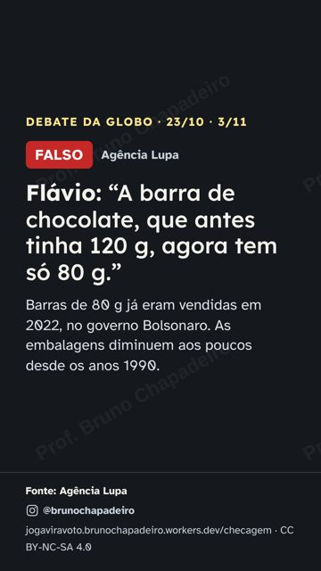
Baixar Story 9:16 checagem-story-03.png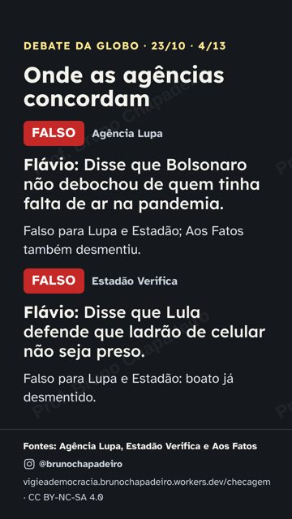
Baixar Story 9:16 checagem-story-04.png- Baixar Story 9:16 checagem-story-05.png
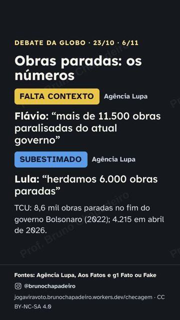
Baixar Story 9:16 checagem-story-06.png- Baixar Story 9:16 checagem-story-07.png


Texto para copiar
VERSÃO SÓ TEXTO (o caminho mais seguro na regra das 72 horas): stories no modo Criar do Instagram, com fundo de cor lisa; ou o print da checagem na página da agência, com só a primeira linha escrita por você. STORY 1 (fundo escuro) O que as agências checaram no debate da Globo Lupa · Estadão Verifica · Aos Fatos · g1 Passe para o lado → STORY 2 (fundo escuro) MÉDIA DAS AGÊNCIAS Frases verdadeiras: Flávio 26% · Lula 52% Falsas, somando tudo: Flávio 12 · Lula 3 Média de Lupa, Estadão Verifica e Aos Fatos, calculada por mim. Adesivo de link: https://jogaviravoto.brunochapadeiro.workers.dev/checagem (texto: Placar de cada agência) STORY 3 (fundo vermelho) FALSO PARA AS TRÊS AGÊNCIAS Flávio disse que Bolsonaro não debochou de quem tinha falta de ar na pandemia. Debochou, sim. Fontes: Lupa, Estadão Verifica e Aos Fatos STORY 4 (fundo vermelho) FALSO Flávio: “a barra de chocolate tinha 120 g, agora tem 80 g” Barras de 80 g já eram vendidas em 2022, no governo Bolsonaro. Fonte: Agência Lupa STORY 5 (fundo vermelho) FALSO, PARA OS DOIS Flávio: “Lula é o pai do Tigrinho”. Lula: “foi criado em 2022”. A lei das apostas é de 2018 (Temer); a regulamentação, de 2023. Nenhuma criou o jogo. Fonte: Agência Lupa STORY 6 (fundo amarelo, letra preta) PRECISA DE CONTEXTO Flávio: “foi o Bolsonaro que deu no mínimo R$ 600” Os R$ 600 vieram de emenda do Congresso, só até dezembro de 2022. A lei que os tornou permanentes é de 2023, do governo Lula. Fontes: g1 Fato ou Fake e Lupa STORY 7 (fundo verde) E o Lula? VERDADEIRO: 33 milhões passando fome em 2022. VERDADEIRO: 700 novos mercados para o agro. ERROU: disse que a economia não cresce acima de 3% desde 2010. Fontes: Lupa e Aos Fatos STORY 8 (fundo escuro) Flávio admitiu, sobre o voto contra a licença-maternidade maior (2009): “Eu estava errado”. Antes de repassar corte, veja o trecho inteiro. Adesivo de link: https://jogaviravoto.brunochapadeiro.workers.dev/checagem (texto: Todas as checagens) e enquete “Você viu o debate?” Vi inteiro / Vi os cortes.
Texto alternativo das imagens
- Card da checagem do debate da Globo, fundo escuro, sem foto. Texto: DEBATE DA GLOBO · 23/10 · 1/13 O que as agências checaram Lupa · Estadão Verifica · Aos Fatos · g1 86 checagens com link. Passe para o lado → Checagens publicadas até 24/10/2026, 8h30 @brunochapadeiro jogaviravoto.brunochapadeiro.workers.dev/checagem · CC BY-NC-SA 4.0
- Card da checagem do debate da Globo, fundo escuro, sem foto. Texto: DEBATE DA GLOBO · 23/10 · 2/13 Cenário total: média das agências Flávio · verdadeiro: 26% 26% verdadeiro 48% impreciso ou sem contexto 27% falso Lula · verdadeiro: 52% 52% verdadeiro 38% impreciso ou sem contexto 10% falso Média de Lupa, Estadão Verifica e Aos Fatos, com peso igual. Fontes: média de Agência Lupa, Estadão Verifica e Aos Fatos @brunochapadeiro jogaviravoto.brunochapadeiro.workers.dev/checagem · CC BY-NC-SA 4.0
- Card da checagem do debate da Globo, fundo escuro, sem foto. Texto: DEBATE DA GLOBO · 23/10 · 3/13 Frases verdadeiras, por agência Agência Flávio Lula Agência Lupa 5 de 27 8 de 15 Estadão Verifica 5 de 15 7 de 13 Aos Fatos 2 de 8 3 de 6 Somando tudo: Flávio, 12 falsas em 51; Lula, 3 em 35. Fontes: Agência Lupa, Estadão Verifica, Aos Fatos e g1 @brunochapadeiro jogaviravoto.brunochapadeiro.workers.dev/checagem · CC BY-NC-SA 4.0
- Card da checagem do debate da Globo, fundo escuro, sem foto. Texto: DEBATE DA GLOBO · 23/10 · 4/13 Onde as agências concordam FALSO Agência Lupa Flávio: Disse que Bolsonaro não debochou de quem tinha falta de ar na pandemia. Falso para Lupa e Estadão; Aos Fatos também desmentiu. FALSO Estadão Verifica Flávio: Disse que Lula defende que ladrão de celular não seja preso. Falso para Lupa e Estadão: boato já desmentido. Fontes: Agência Lupa, Estadão Verifica e Aos Fatos @brunochapadeiro jogaviravoto.brunochapadeiro.workers.dev/checagem · CC BY-NC-SA 4.0
- Card da checagem do debate da Globo, fundo escuro, sem foto. Texto: DEBATE DA GLOBO · 23/10 · 5/13 FALSO Agência Lupa Flávio: “A barra de chocolate, que antes tinha 120 g, agora tem só 80 g.” Barras de 80 g já eram vendidas em 2022, no governo Bolsonaro. As embalagens diminuem aos poucos desde os anos 1990. Fonte: Agência Lupa @brunochapadeiro jogaviravoto.brunochapadeiro.workers.dev/checagem · CC BY-NC-SA 4.0
- Card da checagem do debate da Globo, fundo escuro, sem foto. Texto: DEBATE DA GLOBO · 23/10 · 6/13 FALSO Agência Lupa Tigrinho: os dois erraram Flávio: “Ele [Lula] é o pai do Tigrinho.” Lula: Disse que o Tigrinho foi criado pelo governo Bolsonaro, em 2022. A lei das apostas é de 2018, do governo Temer. A regulamentação, de 2023. Nenhuma criou o jogo. Fontes: Agência Lupa e Aos Fatos @brunochapadeiro jogaviravoto.brunochapadeiro.workers.dev/checagem · CC BY-NC-SA 4.0
- Card da checagem do debate da Globo, fundo escuro, sem foto. Texto: DEBATE DA GLOBO · 23/10 · 7/13 EXAGERADO Agência Lupa Flávio: “Você [Lula] já gastou mais de R$ 400 bilhões para tentar se reeleger.” Os R$ 405 bilhões são medidas com impacto no orçamento em ano eleitoral, incluindo R$ 73,2 bilhões em renúncia de impostos. Não é tudo dinheiro gasto, e o número não prova objetivo eleitoral. Fonte: Agência Lupa @brunochapadeiro jogaviravoto.brunochapadeiro.workers.dev/checagem · CC BY-NC-SA 4.0
Texto e link; se quiser, junte o card da média e o do placar por agência. Nos grupos onde tem gente em dúvida, mande com uma frase sua antes.
Texto para copiar
O que as agências de checagem disseram do debate da Globo: MÉDIA DAS AGÊNCIAS (Lupa, Estadão Verifica e Aos Fatos): frases verdadeiras, Flávio 26%, Lula 52%. Falsas, somando tudo: Flávio 12, Lula 3. FALSO para as três agências. Flávio disse que Bolsonaro não debochou de quem tinha falta de ar na pandemia. Debochou, sim. FALSO. Flávio: “a barra de chocolate tinha 120 g, agora tem 80 g”. Barras de 80 g já eram vendidas em 2022, no governo Bolsonaro (Agência Lupa). FALSO, para os dois. Flávio chamou Lula de “pai do Tigrinho”, e Lula disse que o jogo foi criado em 2022. A lei das apostas é de 2018, do governo Temer; a regulamentação, de 2023. Nenhuma criou o jogo (Lupa e Aos Fatos). EXAGERADO. Flávio: “Lula gastou mais de R$ 400 bilhões para se reeleger”. Não é tudo dinheiro gasto e não prova objetivo eleitoral (Lupa). NÃO É BEM ASSIM. Flávio: “foi o Bolsonaro que deu no mínimo R$ 600”. Os R$ 600 vieram de emenda do Congresso, só até dezembro de 2022; a lei que os tornou permanentes é de 2023, do governo Lula (g1; Lupa: exagerado). LULA TAMBÉM ERROU: disse que a economia não cresce acima de 3% desde 2010 (falso: cresceu em 2011, 2021 e 2022) e que acabou com a fome em 2012 (exagerado). Acertou: 33 milhões passando fome em 2022 e 700 novos mercados para o agro. E Flávio admitiu, sobre o voto contra a licença-maternidade maior: “Eu estava errado”. Placar de cada agência, lista das frases e cards: https://jogaviravoto.brunochapadeiro.workers.dev/checagem Antes de repassar um corte, veja o trecho inteiro. Domingo, das 8h às 17h.
Texto alternativo das imagens
- Card da checagem do debate da Globo, fundo escuro, sem foto. Texto: DEBATE DA GLOBO · 23/10 · 2/13 Cenário total: média das agências Flávio · verdadeiro: 26% 26% verdadeiro 48% impreciso ou sem contexto 27% falso Lula · verdadeiro: 52% 52% verdadeiro 38% impreciso ou sem contexto 10% falso Média de Lupa, Estadão Verifica e Aos Fatos, com peso igual. Fontes: média de Agência Lupa, Estadão Verifica e Aos Fatos @brunochapadeiro jogaviravoto.brunochapadeiro.workers.dev/checagem · CC BY-NC-SA 4.0
- Card da checagem do debate da Globo, fundo escuro, sem foto. Texto: DEBATE DA GLOBO · 23/10 · 3/13 Frases verdadeiras, por agência Agência Flávio Lula Agência Lupa 5 de 27 8 de 15 Estadão Verifica 5 de 15 7 de 13 Aos Fatos 2 de 8 3 de 6 Somando tudo: Flávio, 12 falsas em 51; Lula, 3 em 35. Fontes: Agência Lupa, Estadão Verifica, Aos Fatos e g1 @brunochapadeiro jogaviravoto.brunochapadeiro.workers.dev/checagem · CC BY-NC-SA 4.0
Vídeo de tela da acessibilidade, com o texto sobre o site (reescreva com as suas palavras). Sem som: diga isso na primeira linha, para quem usa leitor de tela.
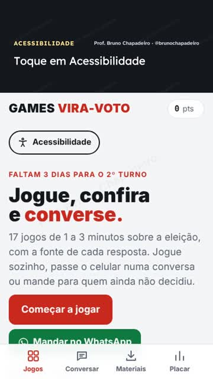
Baixar Vídeo 9:16 tela-acessivel.mp4
Texto para copiar
Nas últimas semanas, montei com auxílio de IA um site livre para conversar sobre o 2º turno: jogos curtos, cartilha, apostila por tema e um guia para acompanhar o debate, tudo com fonte. O que eu mais aprendi foi sobre acessibilidade: letra ampliável, alto contraste, espaçamento para dislexia, leitura em voz alta, Libras e uma versão em leitura fácil de como votar no domingo. Informação cívica precisa chegar a todo mundo, inclusive a quem tem deficiência, baixa visão ou pouca leitura. Se você trabalha com acessibilidade, o site está aberto a críticas: https://jogaviravoto.brunochapadeiro.workers.dev/acessibilidade #Acessibilidade #Eleições2026 #LeituraFácil
Texto alternativo das imagens
- Vídeo sem som, 31 segundos, gravação da tela do celular mostrando os botões de acessibilidade (letra maior, contraste, espaçamento) e Votar no domingo em leitura fácil. Legendas na tela: Toque em Acessibilidade; Letra maior; Alto contraste; Espaçamento, para quem tem dislexia; Libras e leitor de tela também funcionam; Votar no domingo, em leitura fácil; Mande para quem precisa. Link na bio.
Pesquisas: só texto digitado por você, em fundo liso, com o adesivo de link para a página de pesquisas (tem registro, campo, amostra e margem de cada uma). Nada de arte com número de pesquisa.
Texto para copiar
SÓ TEXTO, DIGITADO POR VOCÊ (nada de arte nova com número de pesquisa): 3 stories no modo Criar, fundo liso. STORY 1 PESQUISAS DO 2º TURNO Empate técnico. Média simples das 18 pesquisas mais recentes registradas no TSE, uma por instituto: Lula 49,0% × Flávio 51,0% nos válidos. Conta minha, não é pesquisa nem previsão. Registro, campo, amostra e margem de cada uma no link. Adesivo de link: https://jogaviravoto.brunochapadeiro.workers.dev/pesquisas (texto: Todas as pesquisas) STORY 2 É O MESMO PLACAR DO 1º TURNO Entre os dois, Lula teve 49,0% dos votos válidos no dia 4. Não mexeu. Quem decide é quem for votar. STORY 3 A CONTA DO VIRA-VOTO 1,9 pontos são cerca de 2,3 milhões de votos. Virar 1,2 milhão empata: cerca de 207 votos virados por município. 33,4 milhões não votaram no 1º turno. Leve 3 com você amanhã. Enquete: “Você já sabe a que horas vai votar?” Já / Ainda não
Vídeo de tela do site, sem rosto, sem voz e sem imagem de candidato (pode ir ao ar até sábado). Não tem som: tudo está escrito na tela; se quiser, ponha uma música da biblioteca do Instagram, baixinha. Mostra a média das agências e o filtro das frases falsas. Adesivo de link: https://jogaviravoto.brunochapadeiro.workers.dev/checagem (texto: Placar das agências).
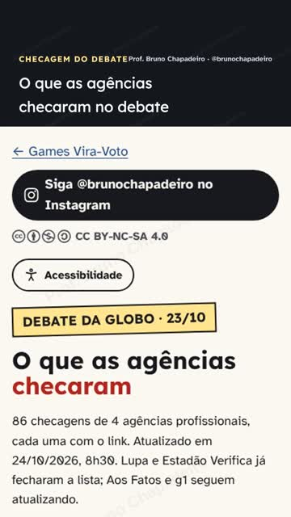
Baixar Vídeo 9:16 tela-checagem.mp4
Texto para copiar
Quem acertou mais no debate da Globo? Juntei as checagens de Lupa, Estadão Verifica, Aos Fatos e g1 numa página só, com o placar de cada agência e a média. Na média, 26% das frases de Flávio checadas eram verdadeiras; de Lula, 52%. Dá para filtrar por agência, por quem falou e pelo resultado, e cada frase tem o link da agência. Lula também errou em algumas, e está lá. Link nos stories. Gravação da tela do site. #ViraVoto #SegundoTurno #Eleições2026 #ChecagemDoDebate
Texto alternativo das imagens
- Vídeo sem som, 32 segundos, gravação da tela do celular mostrando a página Checagem do debate: a média das agências, o placar de Lupa, Estadão Verifica, Aos Fatos e g1 e o filtro que mostra só as frases falsas de cada um. Legendas na tela: O que as agências checaram no debate; Cenário total: a média de 3 agências; De cada 4 frases de Flávio, 1 verdadeira; O placar de cada agência, com link; Filtre: agência, quem falou, resultado; Só as falsas de Flávio, com a agência; Lula também errou: está tudo lá; Antes de repassar, confira. Link nos stories.
Vídeo de tela do site, sem rosto, sem voz e sem imagem de candidato (pode ir ao ar até sábado). Não tem som: tudo está escrito na tela; se quiser, ponha uma música da biblioteca do Instagram, baixinha. Adesivo de link: https://jogaviravoto.brunochapadeiro.workers.dev/desculpa (texto: Treinar em 2 minutos).
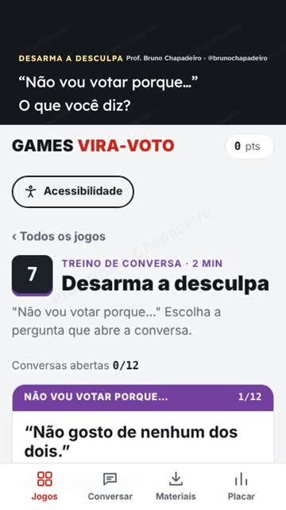
Baixar Vídeo 9:16 tela-desculpa.mp4
Texto para copiar
“Não vou votar porque…” Antes de responder, pergunte. O jogo Desarma a desculpa treina isso em 2 minutos: mostra a resposta que abre a conversa e a que fecha. Treine e mande para quem vai conversar com alguém até domingo. Link nos stories. Gravação da tela do site. #ViraVoto #SegundoTurno #Eleições2026 #DesarmaADesculpa
Texto alternativo das imagens
- Vídeo sem som, 26 segundos, gravação da tela do celular mostrando o jogo Desarma a desculpa: “não vou votar porque…”, uma resposta que abre a conversa e outra que fecha. Legendas na tela: “Não vou votar porque…” O que você diz?; Pergunte antes: a conversa abre; Agora, uma resposta que fecha a conversa; O jogo mostra o caminho; Treine em 2 minutos. Link na bio.
Vídeo de tela do site, sem rosto, sem voz e sem imagem de candidato (pode ir ao ar até sábado). Não tem som: tudo está escrito na tela; se quiser, ponha uma música da biblioteca do Instagram, baixinha. Capa: o quadro com o Fato ou boato.
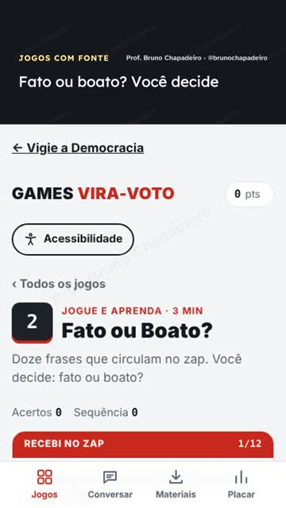
Baixar Vídeo 9:16 tela-jogos.mp4
Texto para copiar
Fato ou boato? Quanto você paga de Imposto de Renda? Quem disse essa frase, Lula ou Flávio? São 17 jogos de 1 a 3 minutos, e cada resposta vem com a fonte. Para jogar sozinho ou numa conversa. Link nos stories. Gravação da tela do site. #ViraVoto #SegundoTurno #Eleições2026 #GamesViraVoto
Texto alternativo das imagens
- Vídeo sem som, 29 segundos, gravação da tela do celular mostrando três jogos: Fato ou boato, Régua do Imposto de Renda e Quem disse?, cada resposta com a fonte. Legendas na tela: Fato ou boato? Você decide; A resposta vem com a fonte; Régua do IR: arraste até o seu salário; Até R$ 5 mil por mês, não paga; Quem disse? Lula ou Flávio; Cada frase tem data e fonte; 17 jogos de 1 a 3 minutos. Link nos stories.
Vídeo de tela do site, sem rosto, sem voz e sem imagem de candidato (pode ir ao ar até sábado). Não tem som: tudo está escrito na tela; se quiser, ponha uma música da biblioteca do Instagram, baixinha. Adesivo de link: https://jogaviravoto.brunochapadeiro.workers.dev/roleta (texto: Confira antes de repassar).
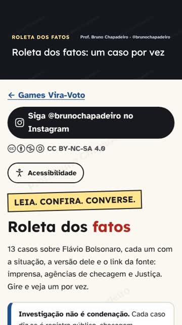
Baixar Vídeo 9:16 tela-roleta.mp4
Texto para copiar
Depois do debate vai chover print. Antes de repassar, gire a Roleta dos fatos: cada caso diz se é investigação, checagem, registro público ou caso arquivado, traz a versão de Flávio e o link da fonte. Investigação não é condenação. Link nos stories. Gravação da tela do site. #ViraVoto #SegundoTurno #Eleições2026 #ConfiraAntes
Texto alternativo das imagens
- Vídeo sem som, 27 segundos, gravação da tela do celular mostrando a Roleta dos fatos: girar, ver a situação do caso (investigação, checagem, registro), a versão de Flávio e a fonte. Legendas na tela: Roleta dos fatos: um caso por vez; Toque em girar; Cada caso diz se é investigação, checagem ou arquivado; E traz a versão de Flávio e a fonte; Gire de novo; Antes de repassar, confira aqui. Link nos stories.
O carrossel da checagem no formato do feed (4:5), com a média das agências no 2º card. Ponha o texto alternativo de cada card (está abaixo de cada imagem).
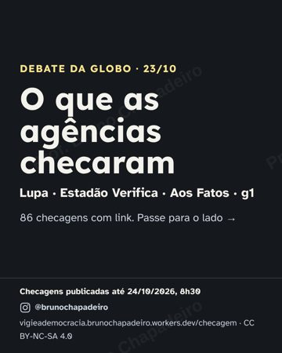
Baixar Feed 4:5 checagem-feed-01.png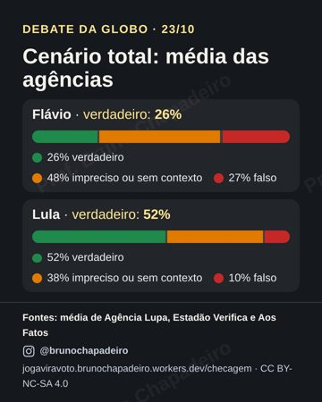
Baixar Feed 4:5 checagem-feed-02.png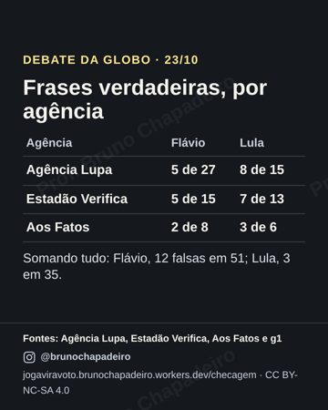
Baixar Feed 4:5 checagem-feed-03.png- Baixar Feed 4:5 checagem-feed-04.png
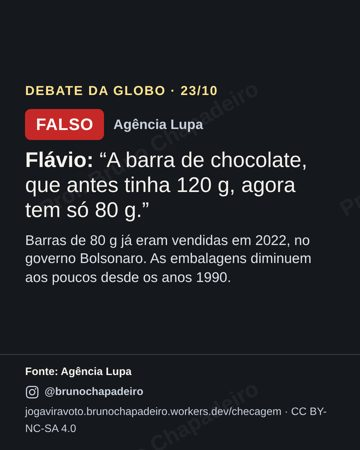
Baixar Feed 4:5 checagem-feed-05.png- Baixar Feed 4:5 checagem-feed-06.png
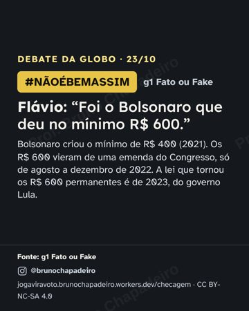
Baixar Feed 4:5 checagem-feed-07.png- Baixar Feed 4:5 checagem-feed-08.png
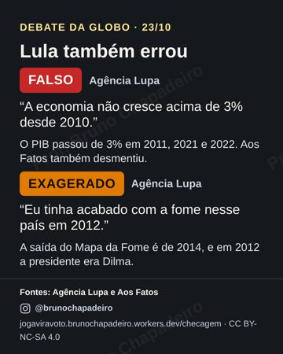
Baixar Feed 4:5 checagem-feed-09.png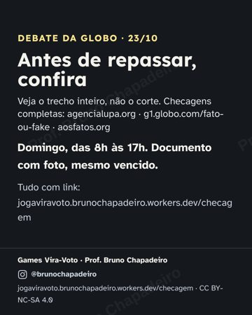
Baixar Feed 4:5 checagem-feed-10.png


Texto para copiar
O que as agências de checagem disseram do debate da Globo: o placar de cada uma e a média. Na média de Lupa, Estadão Verifica e Aos Fatos, 26% das frases de Flávio checadas eram verdadeiras; de Lula, 52%. Somando tudo, Flávio teve 12 frases falsas; Lula, 3. Lula também errou em algumas, e está aqui. Antes de repassar um corte, veja o trecho inteiro. Lista das frases, com link de cada agência: https://jogaviravoto.brunochapadeiro.workers.dev/checagem Fontes: Agência Lupa, Estadão Verifica, Aos Fatos e g1 Fato ou Fake. Média calculada por nós, com peso igual para cada agência. #ViraVoto #SegundoTurno #Eleições2026 #ChecagemDoDebate
Texto alternativo das imagens
- Card da checagem do debate da Globo, fundo escuro, sem foto. Texto: DEBATE DA GLOBO · 23/10 O que as agências checaram Lupa · Estadão Verifica · Aos Fatos · g1 86 checagens com link. Passe para o lado → Checagens publicadas até 24/10/2026, 8h30 @brunochapadeiro jogaviravoto.brunochapadeiro.workers.dev/checagem · CC BY-NC-SA 4.0
- Card da checagem do debate da Globo, fundo escuro, sem foto. Texto: DEBATE DA GLOBO · 23/10 Cenário total: média das agências Flávio · verdadeiro: 26% 26% verdadeiro 48% impreciso ou sem contexto 27% falso Lula · verdadeiro: 52% 52% verdadeiro 38% impreciso ou sem contexto 10% falso Fontes: média de Agência Lupa, Estadão Verifica e Aos Fatos @brunochapadeiro jogaviravoto.brunochapadeiro.workers.dev/checagem · CC BY-NC-SA 4.0
- Card da checagem do debate da Globo, fundo escuro, sem foto. Texto: DEBATE DA GLOBO · 23/10 Frases verdadeiras, por agência Agência Flávio Lula Agência Lupa 5 de 27 8 de 15 Estadão Verifica 5 de 15 7 de 13 Aos Fatos 2 de 8 3 de 6 Somando tudo: Flávio, 12 falsas em 51; Lula, 3 em 35. Fontes: Agência Lupa, Estadão Verifica, Aos Fatos e g1 @brunochapadeiro jogaviravoto.brunochapadeiro.workers.dev/checagem · CC BY-NC-SA 4.0
- Card da checagem do debate da Globo, fundo escuro, sem foto. Texto: DEBATE DA GLOBO · 23/10 Onde as agências concordam FALSO Agência Lupa Flávio: Disse que Bolsonaro não debochou de quem tinha falta de ar na pandemia. FALSO Estadão Verifica Flávio: Disse que Lula defende que ladrão de celular não seja preso. Fontes: Agência Lupa, Estadão Verifica e Aos Fatos @brunochapadeiro jogaviravoto.brunochapadeiro.workers.dev/checagem · CC BY-NC-SA 4.0
- Card da checagem do debate da Globo, fundo escuro, sem foto. Texto: DEBATE DA GLOBO · 23/10 FALSO Agência Lupa Flávio: “A barra de chocolate, que antes tinha 120 g, agora tem só 80 g.” Barras de 80 g já eram vendidas em 2022, no governo Bolsonaro. As embalagens diminuem aos poucos desde os anos 1990. Fonte: Agência Lupa @brunochapadeiro jogaviravoto.brunochapadeiro.workers.dev/checagem · CC BY-NC-SA 4.0
- Card da checagem do debate da Globo, fundo escuro, sem foto. Texto: DEBATE DA GLOBO · 23/10 FALSO Agência Lupa Tigrinho: os dois erraram Flávio: “Ele [Lula] é o pai do Tigrinho.” Lula: Disse que o Tigrinho foi criado pelo governo Bolsonaro, em 2022. A lei das apostas é de 2018, do governo Temer. A regulamentação, de 2023. Nenhuma criou o jogo. Fontes: Agência Lupa e Aos Fatos @brunochapadeiro jogaviravoto.brunochapadeiro.workers.dev/checagem · CC BY-NC-SA 4.0
- Card da checagem do debate da Globo, fundo escuro, sem foto. Texto: DEBATE DA GLOBO · 23/10 Obras paradas: os números FALTA CONTEXTO Agência Lupa Flávio: “mais de 11.500 obras paralisadas do atual governo” SUBESTIMADO Agência Lupa Lula: “herdamos 6.000 obras paradas” TCU: 8,6 mil obras paradas no fim do governo Bolsonaro (2022); 4.215 em abril de 2026. Fontes: Agência Lupa, Aos Fatos e g1 Fato ou Fake @brunochapadeiro jogaviravoto.brunochapadeiro.workers.dev/checagem · CC BY-NC-SA 4.0
- Card da checagem do debate da Globo, fundo escuro, sem foto. Texto: DEBATE DA GLOBO · 23/10 EXAGERADO Agência Lupa #NÃOÉBEMASSIM g1 Fato ou Fake Flávio: “Foi o Bolsonaro que deu no mínimo R$ 600.” Bolsonaro criou o mínimo de R$ 400 (2021). Os R$ 600 vieram de uma emenda do Congresso, só de agosto a dezembro de 2022. A lei que tornou os R$ 600 permanentes é de 2023, do governo Lula. Fontes: Agência Lupa e g1 Fato ou Fake @brunochapadeiro jogaviravoto.brunochapadeiro.workers.dev/checagem · CC BY-NC-SA 4.0
- Card da checagem do debate da Globo, fundo escuro, sem foto. Texto: DEBATE DA GLOBO · 23/10 Lula também errou FALSO Agência Lupa “A economia não cresce acima de 3% desde 2010.” O PIB passou de 3% em 2011, 2021 e 2022. Aos Fatos também desmentiu. EXAGERADO Agência Lupa “Eu tinha acabado com a fome nesse país em 2012.” A saída do Mapa da Fome é de 2014, e em 2012 a presidente era Dilma. Fontes: Agência Lupa e Aos Fatos @brunochapadeiro jogaviravoto.brunochapadeiro.workers.dev/checagem · CC BY-NC-SA 4.0
- Card da checagem do debate da Globo, fundo escuro, sem foto. Texto: DEBATE DA GLOBO · 23/10 Antes de repassar, confira Veja o trecho inteiro, não o corte. Checagens completas: agencialupa.org · estadao.com.br/estadao-verifica · aosfatos.org · g1.globo.com/fato-ou-fake Domingo, das 8h às 17h. Documento com foto, mesmo vencido. Tudo com link: jogaviravoto.brunochapadeiro.workers.dev/checagem Games Vira-Voto · Prof. Bruno Chapadeiro @brunochapadeiro jogaviravoto.brunochapadeiro.workers.dev/checagem · CC BY-NC-SA 4.0
Continue a sequência da manhã: obras, R$ 600, o que Lula acertou, o que Lula errou, “Eu estava errado” e Antes de repassar. Adesivo de link: https://jogaviravoto.brunochapadeiro.workers.dev/checagem.
- Baixar Story 9:16 checagem-story-08.png
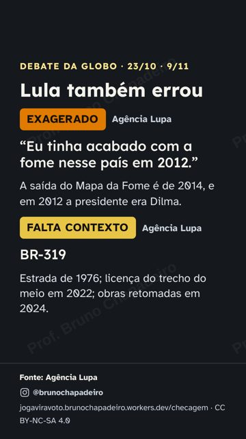
Baixar Story 9:16 checagem-story-09.png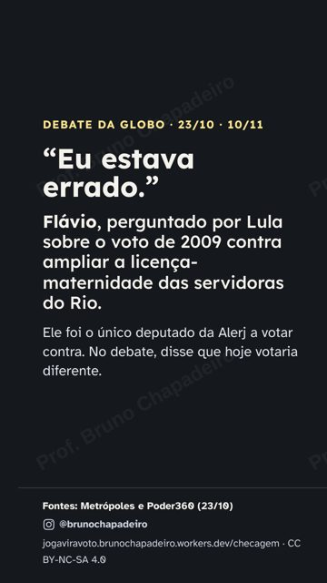
Baixar Story 9:16 checagem-story-10.png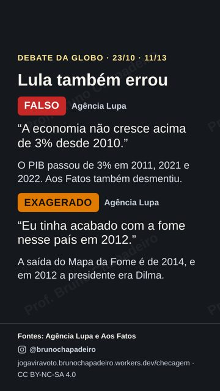
Baixar Story 9:16 checagem-story-11.png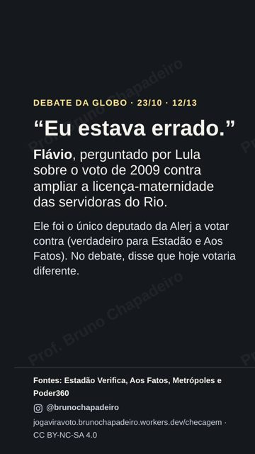
Baixar Story 9:16 checagem-story-12.png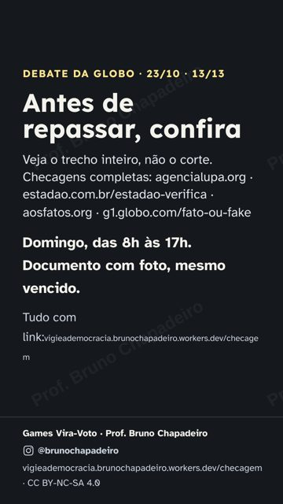
Baixar Story 9:16 checagem-story-13.png


Texto alternativo das imagens
- Card da checagem do debate da Globo, fundo escuro, sem foto. Texto: DEBATE DA GLOBO · 23/10 · 8/13 Obras paradas: os números FALTA CONTEXTO Agência Lupa Flávio: “mais de 11.500 obras paralisadas do atual governo” SUBESTIMADO Agência Lupa Lula: “herdamos 6.000 obras paradas” TCU: 8,6 mil obras paradas no fim do governo Bolsonaro (2022); 4.215 em abril de 2026. Fontes: Agência Lupa, Aos Fatos e g1 Fato ou Fake @brunochapadeiro jogaviravoto.brunochapadeiro.workers.dev/checagem · CC BY-NC-SA 4.0
- Card da checagem do debate da Globo, fundo escuro, sem foto. Texto: DEBATE DA GLOBO · 23/10 · 9/13 EXAGERADO Agência Lupa #NÃOÉBEMASSIM g1 Fato ou Fake Flávio: “Foi o Bolsonaro que deu no mínimo R$ 600.” Bolsonaro criou o mínimo de R$ 400 (2021). Os R$ 600 vieram de uma emenda do Congresso, só de agosto a dezembro de 2022. A lei que tornou os R$ 600 permanentes é de 2023, do governo Lula. Fontes: Agência Lupa e g1 Fato ou Fake @brunochapadeiro jogaviravoto.brunochapadeiro.workers.dev/checagem · CC BY-NC-SA 4.0
- Card da checagem do debate da Globo, fundo escuro, sem foto. Texto: DEBATE DA GLOBO · 23/10 · 10/13 VERDADEIRO Agência Lupa Lula: “Quando eu voltei, tinha 33 milhões de pessoas passando fome.” A Rede Penssan contou 33,1 milhões de pessoas em insegurança alimentar grave em 2022. VERDADEIRO Agência Lupa Lula: “Abrimos 700 novos mercados.” O Ministério da Agricultura registra 700 novos mercados para produtos do agro desde 2023, em 99 destinos. Fonte: Agência Lupa @brunochapadeiro jogaviravoto.brunochapadeiro.workers.dev/checagem · CC BY-NC-SA 4.0
- Card da checagem do debate da Globo, fundo escuro, sem foto. Texto: DEBATE DA GLOBO · 23/10 · 11/13 Lula também errou FALSO Agência Lupa “A economia não cresce acima de 3% desde 2010.” O PIB passou de 3% em 2011, 2021 e 2022. Aos Fatos também desmentiu. EXAGERADO Agência Lupa “Eu tinha acabado com a fome nesse país em 2012.” A saída do Mapa da Fome é de 2014, e em 2012 a presidente era Dilma. Fontes: Agência Lupa e Aos Fatos @brunochapadeiro jogaviravoto.brunochapadeiro.workers.dev/checagem · CC BY-NC-SA 4.0
- Card da checagem do debate da Globo, fundo escuro, sem foto. Texto: DEBATE DA GLOBO · 23/10 · 12/13 “Eu estava errado.” Flávio, perguntado por Lula sobre o voto de 2009 contra ampliar a licença-maternidade das servidoras do Rio. Ele foi o único deputado da Alerj a votar contra (verdadeiro para Estadão e Aos Fatos). No debate, disse que hoje votaria diferente. Fontes: Estadão Verifica, Aos Fatos, Metrópoles e Poder360 @brunochapadeiro jogaviravoto.brunochapadeiro.workers.dev/checagem · CC BY-NC-SA 4.0
- Card da checagem do debate da Globo, fundo escuro, sem foto. Texto: DEBATE DA GLOBO · 23/10 · 13/13 Antes de repassar, confira Veja o trecho inteiro, não o corte. Checagens completas: agencialupa.org · estadao.com.br/estadao-verifica · aosfatos.org · g1.globo.com/fato-ou-fake Domingo, das 8h às 17h. Documento com foto, mesmo vencido. Tudo com link: jogaviravoto.brunochapadeiro.workers.dev/checagem Games Vira-Voto · Prof. Bruno Chapadeiro @brunochapadeiro jogaviravoto.brunochapadeiro.workers.dev/checagem · CC BY-NC-SA 4.0
Vídeo de tela do site, sem rosto, sem voz e sem imagem de candidato (pode ir ao ar até sábado). Não tem som: tudo está escrito na tela; se quiser, ponha uma música da biblioteca do Instagram, baixinha. Adesivo de link: https://jogaviravoto.brunochapadeiro.workers.dev/ (texto: Ajude a espalhar).
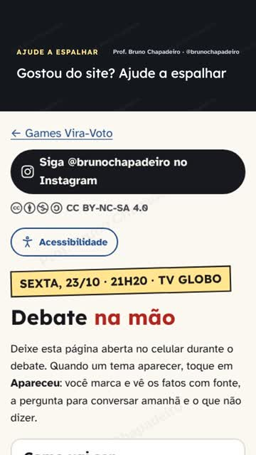
Baixar Vídeo 9:16 tela-compartilhar.mp4
Texto para copiar
Gostou do site Vira-Voto? Em cada página tem curtir, comentar, repostar e compartilhar, e tudo aparece no placar do Brasil. O que mais ajuda: mandar no WhatsApp para quem vai votar no domingo. Link nos stories. Obrigado! Gravação da tela do site. #ViraVoto #SegundoTurno #Eleições2026
Texto alternativo das imagens
- Vídeo sem som, 26 segundos, gravação da tela do celular mostrando como espalhar o site: curtir, comentar no Instagram, repostar no story e mandar no WhatsApp, e o placar do Brasil. Legendas na tela: Gostou do site? Ajude a espalhar; Curta: um toque por celular; Comente no Instagram do Prof. Bruno; Reposte no seu story ou status; Mande no WhatsApp para quem vai votar; Tudo aparece no placar do Brasil; Link nos stories. Obrigado!.
Texto das pesquisas com o link da página. Mande com uma frase sua antes, no grupo onde tem gente desanimada ou achando que já está decidido.
Texto para copiar
Pesquisas do 2º turno, até 24/10/2026, 22h50 (última atualização antes da votação): empate técnico. Média simples das 18 pesquisas mais recentes registradas no TSE, uma por instituto: Lula 49,0% × Flávio 51,0% nos votos válidos. Em 16 delas, a diferença cabe na margem de erro. A média é conta minha, não é pesquisa nem previsão. É o mesmo placar do 1º turno entre os dois. 1,9 pontos são cerca de 2,3 milhões de votos, e 33,4 milhões não votaram no dia 4. Cada pesquisa, com registro no TSE, campo, amostra e margem: https://jogaviravoto.brunochapadeiro.workers.dev/pesquisas Datafolha, Quaest, AtlasIntel, CNT/MDA, Nexus, Palver e Gerp de véspera já estão na página. Seja qual for o número: decide quem vai votar. Domingo, das 8h às 17h.
Vídeo de tela do site, sem rosto, sem voz e sem imagem de candidato (pode ir ao ar até sábado). Não tem som: tudo está escrito na tela; se quiser, ponha uma música da biblioteca do Instagram, baixinha. Adesivo de link: https://jogaviravoto.brunochapadeiro.workers.dev/acessibilidade (texto: Votar no domingo em leitura fácil). Marque quem trabalha com pessoas com deficiência.
Texto para copiar
O site Vira-Voto é para todo mundo: letra maior, alto contraste, espaçamento para dislexia, áudio, Libras e Votar no domingo em leitura fácil. Funciona com leitor de tela. Manda para quem precisa: pessoa idosa, com baixa visão, surda, cega ou com dislexia. Link nos stories. Gravação da tela do site. #ViraVoto #SegundoTurno #Eleições2026 #Acessibilidade #PcD
Texto alternativo das imagens
- Vídeo sem som, 31 segundos, gravação da tela do celular mostrando os botões de acessibilidade (letra maior, contraste, espaçamento) e Votar no domingo em leitura fácil. Legendas na tela: Toque em Acessibilidade; Letra maior; Alto contraste; Espaçamento, para quem tem dislexia; Libras e leitor de tela também funcionam; Votar no domingo, em leitura fácil; Mande para quem precisa. Link na bio.
Vídeo de tela do site, sem rosto, sem voz e sem imagem de candidato (pode ir ao ar até sábado). Não tem som: tudo está escrito na tela; se quiser, ponha uma música da biblioteca do Instagram, baixinha. Para quem quer gravar o próprio vídeo ainda hoje. Adesivo de link: https://jogaviravoto.brunochapadeiro.workers.dev/roteiros (texto: Roteiros com teleprompter).
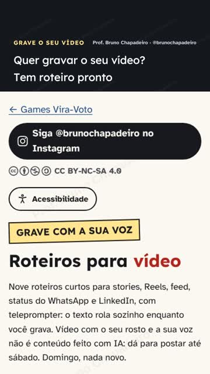
Baixar Vídeo 9:16 tela-teleprompter.mp4
Texto para copiar
Quer gravar um vídeo seu para o story ou o status? Tem nove roteiros curtos prontos, e o teleprompter rola o texto enquanto você fala. Troque o que está entre colchetes pelo seu caso. Vídeo com o seu rosto e a sua voz pode ir ao ar até sábado. Link nos stories. Gravação da tela do site. #ViraVoto #SegundoTurno #Eleições2026 #ViraVoto
Texto alternativo das imagens
- Vídeo sem som, 26 segundos, gravação da tela do celular mostrando a página de roteiros: escolher um roteiro, trocar o caso entre colchetes e gravar com o teleprompter. Legendas na tela: Quer gravar o seu vídeo? Tem roteiro pronto; Nove roteiros curtos, para stories e Reels; Troque o que está entre colchetes pelo seu caso; O teleprompter rola o texto para você; Ajuste a velocidade e o tamanho da letra; Grave e mande para os seus grupos.
Vídeo de tela do site, sem rosto, sem voz e sem imagem de candidato (pode ir ao ar até sábado). Não tem som: tudo está escrito na tela; se quiser, ponha uma música da biblioteca do Instagram, baixinha. Último Reels: vai para quem ainda não segue você.
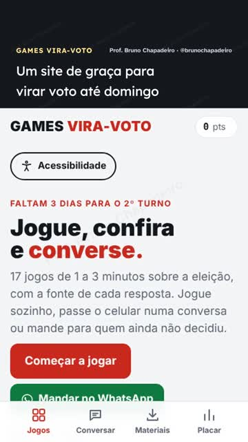
Baixar Vídeo 9:16 tela-site.mp4
Texto para copiar
Juntei num site só tudo o que eu uso para conversar e virar voto: 17 jogos curtos, a Cartilha, a Apostila e o Plano de domingo. De graça, com fonte e acessível (letra grande, áudio, Libras e leitura fácil). Usa até domingo e manda para quem vai conversar com você. Link na bio. Gravação da tela do site; textos do site feitos com auxílio de IA e conferidos nas fontes. #ViraVoto #SegundoTurno #Eleições2026 #GamesViraVoto
Texto alternativo das imagens
- Vídeo sem som, 41 segundos, gravação da tela do celular mostrando o site inteiro: os 17 jogos, o Plano de domingo pronto em 1 minuto, a Cartilha, a Apostila e a página de acessibilidade. Legendas na tela: Um site de graça para virar voto até domingo; 17 jogos curtos, todos com fonte; Plano de domingo em 1 minuto; Sai com o cartão pronto para o status; Cartilha: como conversar sem brigar; Apostila: resposta rápida por tema; Letra grande, áudio, Libras e leitura fácil; Link na bio. Mande para quem vai votar.
Vídeo de tela do site, sem rosto, sem voz e sem imagem de candidato (pode ir ao ar até sábado). Não tem som: tudo está escrito na tela; se quiser, ponha uma música da biblioteca do Instagram, baixinha. Adesivo de link: https://jogaviravoto.brunochapadeiro.workers.dev/#materiais (texto: Baixar e imprimir). Depois, junte os vídeos de tela num Destaque “Vira-Voto”: Destaque publicado até hoje pode ficar no domingo.
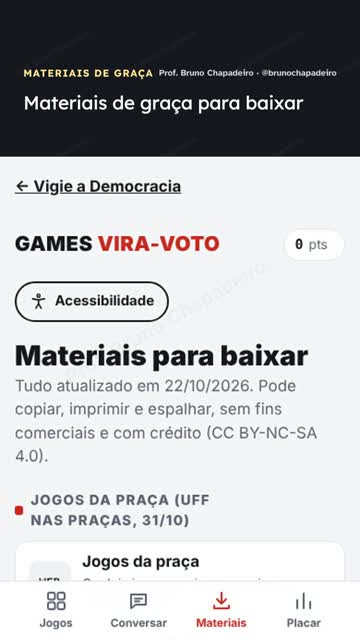
Baixar Vídeo 9:16 tela-materiais.mp4
Texto para copiar
Tudo para baixar, imprimir e espalhar, de graça: Cartilha, Apostila e Guia em PDF (também no tamanho do celular), áudios para o WhatsApp, cartaz com QR Code e baralho. Pode copiar, com crédito. Link nos stories. Gravação da tela do site. #ViraVoto #SegundoTurno #Eleições2026 #ViraVoto
Texto alternativo das imagens
- Vídeo sem som, 18 segundos, gravação da tela do celular mostrando a página de materiais para baixar: PDFs, versões para celular, áudios, cartaz com QR Code e baralho. Legendas na tela: Materiais de graça para baixar; PDFs também no tamanho do celular; Áudios para mandar no WhatsApp; Cartaz com QR Code, baralho e roteiros; Pode copiar e espalhar. Link na bio.
Pesquisas de véspera (Datafolha, Quaest, AtlasIntel, CNT/MDA, Nexus, Palver e Gerp; todas já na página). Para cada uma: print da notícia (com veículo, data e registro) e uma frase sua, como “Vai depender de quem for votar amanhã.” Adesivo de link: https://jogaviravoto.brunochapadeiro.workers.dev/pesquisas (a página já tem todas).
Feiras de manhã (Guia da banquinha). Material impresso, caminhada e carreata podem até as 22h. Para cada pessoa, o plano no cartão: hora, caminho, companhia e documento.
Mande pessoalmente; ponha a hora em que você vai votar.
Texto para copiar
Amanhã é o dia: das 8h às 17h. Eu vou votar às __h. Quem vem comigo? Leve documento com foto (mesmo vencido) e o número anotado num papel. O plano em 1 minuto: https://jogaviravoto.brunochapadeiro.workers.dev/plano
Se gravou o Checklist de amanhã (teleprompter: https://jogaviravoto.brunochapadeiro.workers.dev/roteiros#r9), poste também no status. Se não, poste o vídeo do Plano de domingo de novo no status.
Texto para copiar
Checklist de amanhã · Stories, Reels e status do WhatsApp · 30 s · Sábado, 19h Cena: Selfie. Mostre o seu documento separado, sem o número aparecendo. Amanhã é o dia. Anota: Das oito da manhã às cinco da tarde, horário de Brasília. Documento com foto, mesmo vencido. Não precisa do título. [MOSTRE O DOCUMENTO, SEM O NÚMERO] Leva o número anotado num papel. O celular fica com a mesa, fora da cabine. Vai cedo e leva alguém com você. Eu vou votar às [HORA]. E você? Texto na tela: Das 8h às 17h / Documento com foto, mesmo vencido / Número no papel / Vai com quem? Adesivo de link: https://jogaviravoto.brunochapadeiro.workers.dev/plano Legenda: Amanhã, das 8h às 17h. Que horas você vai? Vai com quem? Teleprompter: https://jogaviravoto.brunochapadeiro.workers.dev/roteiros#r9
Sem arte de IA: só foto, vídeo e texto seus (regra das 72 horas). Foto sua e a legenda (sugestão abaixo). É o último post novo: depois da meia-noite, nada novo.
Texto para copiar
Sugestão de legenda (reescreva com as suas palavras): Amanhã eu voto cedo e levo quem eu amo. Das 8h às 17h. Documento com foto, mesmo vencido. Quem trabalha pode sair para votar. E você: que horas vai? Vai com quem?
Confirme com cada uma das três pessoas: hora, caminho e companhia. Combine de mandar “votei” amanhã.
Última missão da live. Depois, celular de lado: amanhã é dia de votar cedo.
Domingo, 25/10
Dia de votar: nada novo de campanha; utilidade pública, lembrete pessoal e, depois das 17h, a apuração oficial
Vote cedo e leve a família (no seu carro, só família). Documento com foto e o número anotado num papel.
Disseram que você já votou? O passo a passo, sem candidato, sem partido e sem pedir voto. Mande de pessoa para pessoa, com o link https://jogaviravoto.brunochapadeiro.workers.dev/ja-votou. É o jeito mais seguro de circular hoje.
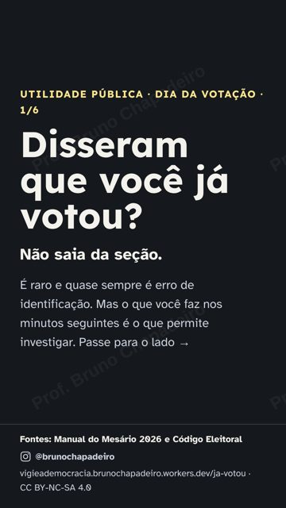
Baixar Story 9:16 javotou-story-01.png

Texto para copiar
UTILIDADE PÚBLICA: chegou à seção e disseram que você JÁ VOTOU? 1. Não saia da seção. 2. Peça ao presidente da mesa que registre na ata: seu nome, título, hora e “Eleitor(a) compareceu e foi informado(a) de que seu título já constava como votado.” Leia o que foi escrito. 3. Peça que chamem o juiz eleitoral (o Manual do Mesário manda chamar quando há dúvida de identidade). 4. Peça para ver a sua linha no Caderno de Votação e que a ata descreva o que está lá. Foto só com autorização e só da sua linha. Celular não entra na cabina. 5. Se tiver fiscal de partido, peça que assine a ata junto. 6. Anote zona, seção, local, hora e nome do presidente da mesa. 7. Hoje mesmo: boletim de ocorrência na Polícia Federal ou na delegacia. Votar no lugar de outra pessoa é crime (Código Eleitoral, art. 309). 8. Procure o Cartório Eleitoral da sua zona. É raro e quase sempre é erro de identificação. Peça com calma. Passo a passo com as fontes: jogaviravoto.brunochapadeiro.workers.dev/ja-votou
Texto alternativo das imagens
- Card de utilidade pública, fundo escuro, sem foto nem candidato. Texto: UTILIDADE PÚBLICA · DIA DA VOTAÇÃO · 1/6 Disseram que você já votou? Não saia da seção. É raro e quase sempre é erro de identificação. Mas o que você faz nos minutos seguintes é o que permite investigar. Passe para o lado → Fontes: Manual do Mesário 2026 e Código Eleitoral @brunochapadeiro jogaviravoto.brunochapadeiro.workers.dev/ja-votou · CC BY-NC-SA 4.0
Atenção: hoje a lei proíbe publicar conteúdo novo de propaganda na internet (Lei 9.504/1997, art. 39, § 5º, IV). Estes cards não têm candidato, partido, número nem cor de campanha: são informação sobre como votar. Mesmo assim, o seu perfil é de campanha; se postar, não comente o voto, não marque candidato e não impulsione. Na dúvida, fique só no WhatsApp.
- Baixar Story 9:16 javotou-story-01.png
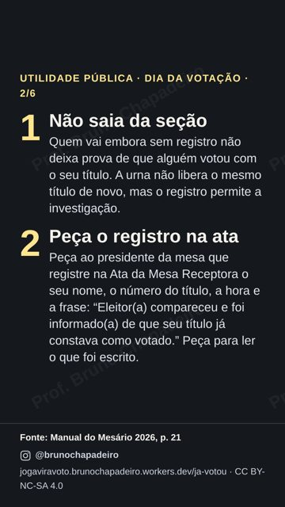
Baixar Story 9:16 javotou-story-02.png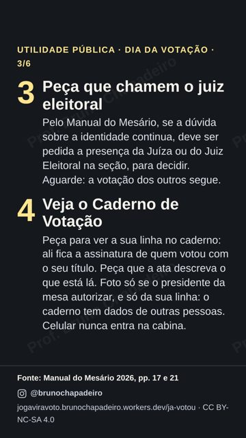
Baixar Story 9:16 javotou-story-03.png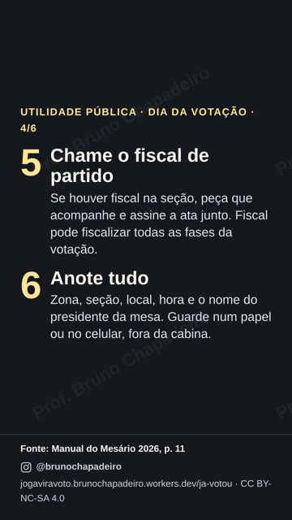
Baixar Story 9:16 javotou-story-04.png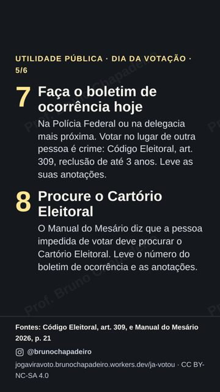
Baixar Story 9:16 javotou-story-05.png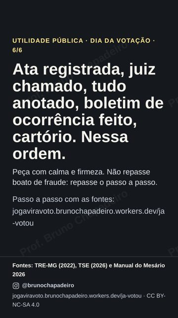
Baixar Story 9:16 javotou-story-06.png


Texto alternativo das imagens
- Card de utilidade pública, fundo escuro, sem foto nem candidato. Texto: UTILIDADE PÚBLICA · DIA DA VOTAÇÃO · 1/6 Disseram que você já votou? Não saia da seção. É raro e quase sempre é erro de identificação. Mas o que você faz nos minutos seguintes é o que permite investigar. Passe para o lado → Fontes: Manual do Mesário 2026 e Código Eleitoral @brunochapadeiro jogaviravoto.brunochapadeiro.workers.dev/ja-votou · CC BY-NC-SA 4.0
- Card de utilidade pública, fundo escuro, sem foto nem candidato. Texto: UTILIDADE PÚBLICA · DIA DA VOTAÇÃO · 2/6 1 Não saia da seção Quem vai embora sem registro não deixa prova de que alguém votou com o seu título. A urna não libera o mesmo título de novo, mas o registro permite a investigação. 2 Peça o registro na ata Peça ao presidente da mesa que registre na Ata da Mesa Receptora o seu nome, o número do título, a hora e a frase: “Eleitor(a) compareceu e foi informado(a) de que seu título já constava como votado.” Peça para ler o que foi escrito. Fonte: Manual do Mesário 2026, p. 21 @brunochapadeiro jogaviravoto.brunochapadeiro.workers.dev/ja-votou · CC BY-NC-SA 4.0
- Card de utilidade pública, fundo escuro, sem foto nem candidato. Texto: UTILIDADE PÚBLICA · DIA DA VOTAÇÃO · 3/6 3 Peça que chamem o juiz eleitoral Pelo Manual do Mesário, se a dúvida sobre a identidade continua, deve ser pedida a presença da Juíza ou do Juiz Eleitoral na seção, para decidir. Aguarde: a votação dos outros segue. 4 Veja o Caderno de Votação Peça para ver a sua linha no caderno: ali fica a assinatura de quem votou com o seu título. Peça que a ata descreva o que está lá. Foto só se o presidente da mesa autorizar, e só da sua linha: o caderno tem dados de outras pessoas. Celular nunca entra na cabina. Fonte: Manual do Mesário 2026, pp. 17 e 21 @brunochapadeiro jogaviravoto.brunochapadeiro.workers.dev/ja-votou · CC BY-NC-SA 4.0
- Card de utilidade pública, fundo escuro, sem foto nem candidato. Texto: UTILIDADE PÚBLICA · DIA DA VOTAÇÃO · 4/6 5 Chame o fiscal de partido Se houver fiscal na seção, peça que acompanhe e assine a ata junto. Fiscal pode fiscalizar todas as fases da votação. 6 Anote tudo Zona, seção, local, hora e o nome do presidente da mesa. Guarde num papel ou no celular, fora da cabina. Fonte: Manual do Mesário 2026, p. 11 @brunochapadeiro jogaviravoto.brunochapadeiro.workers.dev/ja-votou · CC BY-NC-SA 4.0
- Card de utilidade pública, fundo escuro, sem foto nem candidato. Texto: UTILIDADE PÚBLICA · DIA DA VOTAÇÃO · 5/6 7 Faça o boletim de ocorrência hoje Na Polícia Federal ou na delegacia mais próxima. Votar no lugar de outra pessoa é crime: Código Eleitoral, art. 309, reclusão de até 3 anos. Leve as suas anotações. 8 Procure o Cartório Eleitoral O Manual do Mesário diz que a pessoa impedida de votar deve procurar o Cartório Eleitoral. Leve o número do boletim de ocorrência e as anotações. Fontes: Código Eleitoral, art. 309, e Manual do Mesário 2026, p. 21 @brunochapadeiro jogaviravoto.brunochapadeiro.workers.dev/ja-votou · CC BY-NC-SA 4.0
- Card de utilidade pública, fundo escuro, sem foto nem candidato. Texto: UTILIDADE PÚBLICA · DIA DA VOTAÇÃO · 6/6 Ata registrada, juiz chamado, tudo anotado, boletim de ocorrência feito, cartório. Nessa ordem. Peça com calma e firmeza. Não repasse boato de fraude: repasse o passo a passo. Passo a passo com as fontes: jogaviravoto.brunochapadeiro.workers.dev/ja-votou Fontes: TRE-MG (2022), TSE (2026) e Manual do Mesário 2026 @brunochapadeiro jogaviravoto.brunochapadeiro.workers.dev/ja-votou · CC BY-NC-SA 4.0
Mensagem pessoal, sem nome nem número de candidato e sem pedir voto: só lembrar o horário e oferecer ajuda.
Texto para copiar
Bom dia! Hoje a votação vai até as 17h. Já conseguiu ir? Se precisar de ajuda com o local ou o documento, me chama.
Não publique conteúdo novo de campanha nem impulsione (Lei 9.504/1997, art. 39, § 5º). A exceção deste plano é só a utilidade pública acima, sem candidato. O que já está no ar pode ficar, inclusive os Destaques. Pode usar broche, adesivo ou camiseta, em silêncio e só você. Sem boca de urna. Ajude do jeito certo: transporte público gratuito, nunca carona para quem não é da família.
A votação foi prorrogada até as 19h pelo STF: nada antes disso. Depois que as seções fecharem: fundo liso, texto seu e o adesivo de link para https://jogaviravoto.brunochapadeiro.workers.dev/apuracao (texto: Apuração ao vivo). A página lê os números oficiais do TSE a cada minuto, com Brasil, exterior e cada estado.
Texto para copiar
APURAÇÃO AO VIVO Números oficiais do TSE, atualizados a cada minuto: Brasil, exterior e cada estado. O resultado que vale é o do TSE. Adesivo de link: https://jogaviravoto.brunochapadeiro.workers.dev/apuracao (texto: Apuração ao vivo)
Para quem pergunta “como está?”: o link da apuração, que mostra só número oficial do TSE. Para quem quer mapa e evolução, o painel MeiaUm no modo “Oficial do TSE”. Não repasse projeção, o modo “consolidado” de outro site nem “parcial vazada”.
Texto para copiar
A apuração do 2º turno, com os números oficiais do TSE atualizados a cada minuto (Brasil, exterior e cada estado): https://jogaviravoto.brunochapadeiro.workers.dev/apuracao Parcial muda ao longo da noite, porque cada estado apura num ritmo. O resultado que vale é o do TSE: resultados.tse.jus.br Quer ver o mapa por estado e a evolução da noite? meiaum.vinnytasso.com.br/eleicoes (painel independente que lê os arquivos do TSE; deixe no modo “Oficial do TSE”).
Na página da apuração, toque em “Card para Stories”: o card sai no seu celular com o número do TSE daquela hora, o percentual de seções e a fonte. Escreva “parcial” e a hora. O mais seguro continua sendo o print do site de Resultados do TSE com uma frase sua.
Print do site de Resultados do TSE com o resultado final e uma frase sua. Sem ataque, sem “fraude”, sem corte: o resultado oficial é o da totalização do TSE.
Confira o boletim da sua urna no site do TSE. Agradeça à sua Corrente dos 3.